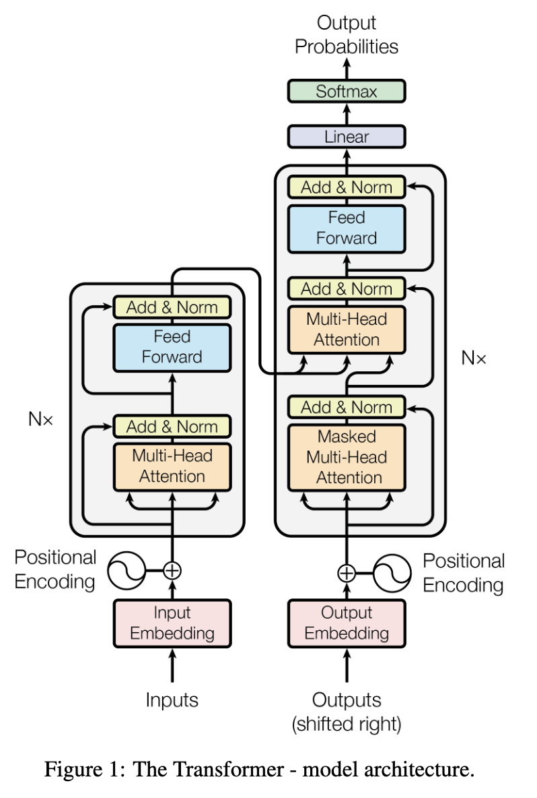

01 · Building a GPT From Scratch
Building a GPT
We will build a tiny GPT using Karpathy’s nanoGPT model. It has all the components of an LLM. GPT-3 and later models use the same architecture, just with many more parameters and more optimized training.
Attention is all you need
\text{Attention}(Q, K, V) = \text{softmax}\left(\frac{QK^T}{\sqrt{d_k}}\right)V

Source: Vaswani et al. (2017), “Attention Is All You Need”
The original paper’s goal was translation. For next token generation, we will use only the decoder portion of the original model.

| Symbol | Meaning |
|---|---|
| B | batch size |
| T | sequence length (tokens) |
| d | embedding dimension (n_embd) |
| h | number of attention heads |
| d/h | head size (per-head embedding dim) |
| V | vocabulary size |
nanoGPT notebook
Below is a slightly modified version of the companion notebook to the Zero To Hero video on GPT. Downloaded from here
(https://github.com/karpathy/nanoGPT)
download the tiny shakespeare dataset
Show the code
length of dataset in characters: 1115394First Citizen:
Before we proceed any further, hear me speak.
All:
Speak, speak.
First Citizen:
You are all resolved rather to die than to famish?
All:
Resolved. resolved.
First Citizen:
First, you know Caius Marcius is chief enemy to the people.
All:
We know't, we know't.
First Citizen:
Let us kill him, and we'll have corn at our own price.
Is't a verdict?
All:
No more talking on't; let it be done: away, away!
Second Citizen:
One word, good citizens.
First Citizen:
We are accounted poor citizens, the patricians good.
What authority surfeits on would relieve us: if they
would yield us but the superfluity, while it were
wholesome, we might guess they relieved us humanely;
but they think we are too dear: the leanness that
afflicts us, the object of our misery, is as an
inventory to particularise their abundance; our
sufferance is a gain to them Let us revenge this with
our pikes, ere we become rakes: for the gods know I
speak this in hunger for bread, not in thirst for revenge.
mapping characters to integers and vice versa
Show the code
# create a mapping from characters to integers
stoi = { ch:i for i,ch in enumerate(chars) }
itos = { i:ch for i,ch in enumerate(chars) }
encode = lambda s: [stoi[c] for c in s] # encoder: take a string, output a list of integers
decode = lambda l: ''.join([itos[i] for i in l]) # decoder: take a list of integers, output a string
print(encode("hii there"))
print(decode(encode("hii there")))[46, 47, 47, 1, 58, 46, 43, 56, 43]
hii thereencode the data into torch tensor
Show the code
# let's now encode the entire text dataset and store it into a torch.Tensor
import torch # we use PyTorch: [https://pytorch.org](https://pytorch.org)
data = torch.tensor(encode(text), dtype=torch.long)
print(data.shape, data.dtype)
print(data[:1000]) # the 1000 characters we looked at earier will to the GPT look like thistorch.Size([1115394]) torch.int64
tensor([18, 47, 56, 57, 58, 1, 15, 47, 58, 47, 64, 43, 52, 10, 0, 14, 43, 44,
53, 56, 43, 1, 61, 43, 1, 54, 56, 53, 41, 43, 43, 42, 1, 39, 52, 63,
1, 44, 59, 56, 58, 46, 43, 56, 6, 1, 46, 43, 39, 56, 1, 51, 43, 1,
57, 54, 43, 39, 49, 8, 0, 0, 13, 50, 50, 10, 0, 31, 54, 43, 39, 49,
6, 1, 57, 54, 43, 39, 49, 8, 0, 0, 18, 47, 56, 57, 58, 1, 15, 47,
58, 47, 64, 43, 52, 10, 0, 37, 53, 59, 1, 39, 56, 43, 1, 39, 50, 50,
1, 56, 43, 57, 53, 50, 60, 43, 42, 1, 56, 39, 58, 46, 43, 56, 1, 58,
53, 1, 42, 47, 43, 1, 58, 46, 39, 52, 1, 58, 53, 1, 44, 39, 51, 47,
57, 46, 12, 0, 0, 13, 50, 50, 10, 0, 30, 43, 57, 53, 50, 60, 43, 42,
8, 1, 56, 43, 57, 53, 50, 60, 43, 42, 8, 0, 0, 18, 47, 56, 57, 58,
1, 15, 47, 58, 47, 64, 43, 52, 10, 0, 18, 47, 56, 57, 58, 6, 1, 63,
53, 59, 1, 49, 52, 53, 61, 1, 15, 39, 47, 59, 57, 1, 25, 39, 56, 41,
47, 59, 57, 1, 47, 57, 1, 41, 46, 47, 43, 44, 1, 43, 52, 43, 51, 63,
1, 58, 53, 1, 58, 46, 43, 1, 54, 43, 53, 54, 50, 43, 8, 0, 0, 13,
50, 50, 10, 0, 35, 43, 1, 49, 52, 53, 61, 5, 58, 6, 1, 61, 43, 1,
49, 52, 53, 61, 5, 58, 8, 0, 0, 18, 47, 56, 57, 58, 1, 15, 47, 58,
47, 64, 43, 52, 10, 0, 24, 43, 58, 1, 59, 57, 1, 49, 47, 50, 50, 1,
46, 47, 51, 6, 1, 39, 52, 42, 1, 61, 43, 5, 50, 50, 1, 46, 39, 60,
43, 1, 41, 53, 56, 52, 1, 39, 58, 1, 53, 59, 56, 1, 53, 61, 52, 1,
54, 56, 47, 41, 43, 8, 0, 21, 57, 5, 58, 1, 39, 1, 60, 43, 56, 42,
47, 41, 58, 12, 0, 0, 13, 50, 50, 10, 0, 26, 53, 1, 51, 53, 56, 43,
1, 58, 39, 50, 49, 47, 52, 45, 1, 53, 52, 5, 58, 11, 1, 50, 43, 58,
1, 47, 58, 1, 40, 43, 1, 42, 53, 52, 43, 10, 1, 39, 61, 39, 63, 6,
1, 39, 61, 39, 63, 2, 0, 0, 31, 43, 41, 53, 52, 42, 1, 15, 47, 58,
47, 64, 43, 52, 10, 0, 27, 52, 43, 1, 61, 53, 56, 42, 6, 1, 45, 53,
53, 42, 1, 41, 47, 58, 47, 64, 43, 52, 57, 8, 0, 0, 18, 47, 56, 57,
58, 1, 15, 47, 58, 47, 64, 43, 52, 10, 0, 35, 43, 1, 39, 56, 43, 1,
39, 41, 41, 53, 59, 52, 58, 43, 42, 1, 54, 53, 53, 56, 1, 41, 47, 58,
47, 64, 43, 52, 57, 6, 1, 58, 46, 43, 1, 54, 39, 58, 56, 47, 41, 47,
39, 52, 57, 1, 45, 53, 53, 42, 8, 0, 35, 46, 39, 58, 1, 39, 59, 58,
46, 53, 56, 47, 58, 63, 1, 57, 59, 56, 44, 43, 47, 58, 57, 1, 53, 52,
1, 61, 53, 59, 50, 42, 1, 56, 43, 50, 47, 43, 60, 43, 1, 59, 57, 10,
1, 47, 44, 1, 58, 46, 43, 63, 0, 61, 53, 59, 50, 42, 1, 63, 47, 43,
50, 42, 1, 59, 57, 1, 40, 59, 58, 1, 58, 46, 43, 1, 57, 59, 54, 43,
56, 44, 50, 59, 47, 58, 63, 6, 1, 61, 46, 47, 50, 43, 1, 47, 58, 1,
61, 43, 56, 43, 0, 61, 46, 53, 50, 43, 57, 53, 51, 43, 6, 1, 61, 43,
1, 51, 47, 45, 46, 58, 1, 45, 59, 43, 57, 57, 1, 58, 46, 43, 63, 1,
56, 43, 50, 47, 43, 60, 43, 42, 1, 59, 57, 1, 46, 59, 51, 39, 52, 43,
50, 63, 11, 0, 40, 59, 58, 1, 58, 46, 43, 63, 1, 58, 46, 47, 52, 49,
1, 61, 43, 1, 39, 56, 43, 1, 58, 53, 53, 1, 42, 43, 39, 56, 10, 1,
58, 46, 43, 1, 50, 43, 39, 52, 52, 43, 57, 57, 1, 58, 46, 39, 58, 0,
39, 44, 44, 50, 47, 41, 58, 57, 1, 59, 57, 6, 1, 58, 46, 43, 1, 53,
40, 48, 43, 41, 58, 1, 53, 44, 1, 53, 59, 56, 1, 51, 47, 57, 43, 56,
63, 6, 1, 47, 57, 1, 39, 57, 1, 39, 52, 0, 47, 52, 60, 43, 52, 58,
53, 56, 63, 1, 58, 53, 1, 54, 39, 56, 58, 47, 41, 59, 50, 39, 56, 47,
57, 43, 1, 58, 46, 43, 47, 56, 1, 39, 40, 59, 52, 42, 39, 52, 41, 43,
11, 1, 53, 59, 56, 0, 57, 59, 44, 44, 43, 56, 39, 52, 41, 43, 1, 47,
57, 1, 39, 1, 45, 39, 47, 52, 1, 58, 53, 1, 58, 46, 43, 51, 1, 24,
43, 58, 1, 59, 57, 1, 56, 43, 60, 43, 52, 45, 43, 1, 58, 46, 47, 57,
1, 61, 47, 58, 46, 0, 53, 59, 56, 1, 54, 47, 49, 43, 57, 6, 1, 43,
56, 43, 1, 61, 43, 1, 40, 43, 41, 53, 51, 43, 1, 56, 39, 49, 43, 57,
10, 1, 44, 53, 56, 1, 58, 46, 43, 1, 45, 53, 42, 57, 1, 49, 52, 53,
61, 1, 21, 0, 57, 54, 43, 39, 49, 1, 58, 46, 47, 57, 1, 47, 52, 1,
46, 59, 52, 45, 43, 56, 1, 44, 53, 56, 1, 40, 56, 43, 39, 42, 6, 1,
52, 53, 58, 1, 47, 52, 1, 58, 46, 47, 56, 57, 58, 1, 44, 53, 56, 1,
56, 43, 60, 43, 52, 45, 43, 8, 0, 0])split up the data into train and validation sets
define the block size
define the context and target: 8 examples in one batch
Show the code
when input is tensor([18]) the target: 47
when input is tensor([18, 47]) the target: 56
when input is tensor([18, 47, 56]) the target: 57
when input is tensor([18, 47, 56, 57]) the target: 58
when input is tensor([18, 47, 56, 57, 58]) the target: 1
when input is tensor([18, 47, 56, 57, 58, 1]) the target: 15
when input is tensor([18, 47, 56, 57, 58, 1, 15]) the target: 47
when input is tensor([18, 47, 56, 57, 58, 1, 15, 47]) the target: 58define the batch size and get the batch
Show the code
torch.manual_seed(1337)
batch_size = 4 # how many independent sequences will we process in parallel?
block_size = 8 # what is the maximum context length for predictions?
def get_batch(split):
# generate a small batch of data of inputs x and targets y
data = train_data if split == 'train' else val_data
ix = torch.randint(len(data) - block_size, (batch_size,))
x = torch.stack([data[i:i+block_size] for i in ix])
y = torch.stack([data[i+1:i+block_size+1] for i in ix])
return x, y
xb, yb = get_batch('train')
print('inputs:')
print(xb.shape)
print(xb)
print('targets:')
print(yb.shape)
print(yb)
print('----')
for b in range(batch_size): # batch dimension
for t in range(block_size): # time dimension
context = xb[b, :t+1]
target = yb[b,t]
print(f"when input is {context.tolist()} the target: {target}")inputs:
torch.Size([4, 8])
tensor([[24, 43, 58, 5, 57, 1, 46, 43],
[44, 53, 56, 1, 58, 46, 39, 58],
[52, 58, 1, 58, 46, 39, 58, 1],
[25, 17, 27, 10, 0, 21, 1, 54]])
targets:
torch.Size([4, 8])
tensor([[43, 58, 5, 57, 1, 46, 43, 39],
[53, 56, 1, 58, 46, 39, 58, 1],
[58, 1, 58, 46, 39, 58, 1, 46],
[17, 27, 10, 0, 21, 1, 54, 39]])
----
when input is [24] the target: 43
when input is [24, 43] the target: 58
when input is [24, 43, 58] the target: 5
when input is [24, 43, 58, 5] the target: 57
when input is [24, 43, 58, 5, 57] the target: 1
when input is [24, 43, 58, 5, 57, 1] the target: 46
when input is [24, 43, 58, 5, 57, 1, 46] the target: 43
when input is [24, 43, 58, 5, 57, 1, 46, 43] the target: 39
when input is [44] the target: 53
when input is [44, 53] the target: 56
when input is [44, 53, 56] the target: 1
when input is [44, 53, 56, 1] the target: 58
when input is [44, 53, 56, 1, 58] the target: 46
when input is [44, 53, 56, 1, 58, 46] the target: 39
when input is [44, 53, 56, 1, 58, 46, 39] the target: 58
when input is [44, 53, 56, 1, 58, 46, 39, 58] the target: 1
when input is [52] the target: 58
when input is [52, 58] the target: 1
when input is [52, 58, 1] the target: 58
when input is [52, 58, 1, 58] the target: 46
when input is [52, 58, 1, 58, 46] the target: 39
when input is [52, 58, 1, 58, 46, 39] the target: 58
when input is [52, 58, 1, 58, 46, 39, 58] the target: 1
when input is [52, 58, 1, 58, 46, 39, 58, 1] the target: 46
when input is [25] the target: 17
when input is [25, 17] the target: 27
when input is [25, 17, 27] the target: 10
when input is [25, 17, 27, 10] the target: 0
when input is [25, 17, 27, 10, 0] the target: 21
when input is [25, 17, 27, 10, 0, 21] the target: 1
when input is [25, 17, 27, 10, 0, 21, 1] the target: 54
when input is [25, 17, 27, 10, 0, 21, 1, 54] the target: 39start with a simple model: the bigram language model
Show the code
# define the bigram language model
import torch
import torch.nn as nn
from torch.nn import functional as F
torch.manual_seed(1337)
class BigramLanguageModel(nn.Module):
def __init__(self, vocab_size):
super().__init__()
self.token_embedding_table = nn.Embedding(vocab_size, vocab_size)
def forward(self, idx, targets=None):
# idx and targets are both (B,T) tensor of integers
logits = self.token_embedding_table(idx) # (B,T,V)
if targets is None:
loss = None
else:
B, T, C = logits.shape
logits = logits.view(B*T, C)
targets = targets.view(B*T)
loss = F.cross_entropy(logits, targets)
return logits, loss
def generate(self, idx, max_new_tokens):
# idx is (B, T) array of indices in the current context
for _ in range(max_new_tokens):
# get the predictions
logits, loss = self(idx)
# focus only on the last time step
logits = logits[:, -1, :] # becomes (B, V)
# apply softmax to get probabilities
probs = F.softmax(logits, dim=-1) # (B, V)
# sample from the distribution
idx_next = torch.multinomial(probs, num_samples=1) # (B, 1)
# append sampled index to the running sequence
idx = torch.cat((idx, idx_next), dim=1) # (B, T+1)
return idxcross entropy loss
\text{Loss} = -\sum_{i}(y_i \cdot \log(p_i))
where:
- y_i = actual probability (0 or 1 for the i-th class)
- p_i = predicted probability for the i-th class
- \sum = sum over all classes (characters)
This is the loss for a single token prediction. The total loss reported by F.cross_entropy is the average loss across all B \times T tokens in the batch, where:
- B = batch_size
- T = block_size (sequence length)
Before training, we would expect the model to predict the next character from a uniform distribution (random guessing). The probability for the correct character would be 1 / \text{vocab\_size}.
Expected initial loss \approx -\log(1 / \text{vocab\_size}) = \log(\text{vocab\_size}) = \log(65) \approx 4.1744
initialize the model and compute the loss
generate text
choose AdamW as the optimizer
train the model
generate text starting with 0=\n as initial context
Show the code
oTo.JUZ!!zqe!
xBP qbs$Gy'AcOmrLwwt
p$x;Seh-onQbfM?OjKbn'NwUAW -Np3fkz$FVwAUEa-wzWC -wQo-R!v -Mj?,SPiTyZ;o-opr$mOiPJEYD-CfigkzD3p3?zvS;ADz;.y?o,ivCuC'zqHxcVT cHA
rT'Fd,SBMZyOslg!NXeF$sBe,juUzLq?w-wzP-h
ERjjxlgJzPbHxf$ q,q,KCDCU fqBOQT
SV&CW:xSVwZv'DG'NSPypDhKStKzC -$hslxIVzoivnp ,ethA:NCCGoi
tN!ljjP3fwJMwNelgUzzPGJlgihJ!d?q.d
pSPYgCuCJrIFtb
jQXg
pA.P LP,SPJi
DBcuBM:CixjJ$Jzkq,OLf3KLQLMGph$O 3DfiPHnXKuHMlyjxEiyZib3FaHV-oJa!zoc'XSP :CKGUhd?lgCOF$;;DTHZMlvvcmZAm;:iv'MMgO&Ywbc;BLCUd&vZINLIzkuTGZa
D.?The output looks like random noise — no recognizable words, no structure. The bigram model isn’t really learning anything useful. Why? Because it only looks at one character at a time to predict the next one. The context window is just 1 token.
To do better, we need the model to look at more of the past — ideally all the previous characters in the context window — and use that broader context to predict what comes next.
But aggregating over a variable-length history naively (with a for loop) is slow and inelegant. Before we build the full self-attention mechanism, let’s learn a key trick: how to express this aggregation as a matrix multiplication. This will make the operation fast, parallelizable, and — crucially — generalizable to learned, data-dependent weights.
The mathematical trick in self-attention
toy example illustrating how matrix multiplication can be used for a “weighted aggregation”
Show the code
torch.manual_seed(42)
a = torch.tril(torch.ones(3, 3)) # Lower triangular matrix of 1s
a = a / torch.sum(a, 1, keepdim=True) # Normalize rows to sum to 1
b = torch.randint(0,10,(3,2)).float() # Some data
c = a @ b # Matrix multiply
print('a=')
print(a)
print('--')
print('b=')
print(b)
print('--')
print('c=')
print(c)a=
tensor([[1.0000, 0.0000, 0.0000],
[0.5000, 0.5000, 0.0000],
[0.3333, 0.3333, 0.3333]])
--
b=
tensor([[2., 7.],
[6., 4.],
[6., 5.]])
--
c=
tensor([[2.0000, 7.0000],
[4.0000, 5.5000],
[4.6667, 5.3333]])version 1: using a for loop to compute the weighted aggregation
Show the code
version 2: using matrix multiply for a weighted aggregation
Show the code
# Create the averaging weight matrix
wei = torch.tril(torch.ones(T, T))
wei = wei / wei.sum(1, keepdim=True) # Normalize rows to sum to 1
# Perform batched matrix multiplication
xbow2 = wei @ x # (T, T) @ (B, T, d) -> (B, T, d) via broadcasting
torch.allclose(xbow, xbow2) # Check if results are identicalTrueversion 3: use Softmax
Show the code
tril = torch.tril(torch.ones(T, T))
wei = torch.zeros((T,T))
# Mask out future positions by setting them to -infinity before softmax
wei = wei.masked_fill(tril == 0, float('-inf'))
# Apply softmax to get row-wise probability distributions (weights)
wei = F.softmax(wei, dim=-1)
# Perform weighted aggregation
xbow3 = wei @ x
torch.allclose(xbow, xbow3) # Check if results are identicalTruesoftmax function
softmax(z_i) = \frac{e^{z_i}}{\sum_j e^{z_j}}
version 4: self-attention
Show the code
torch.manual_seed(1337)
B,T,C = 4,8,32 # batch, time, embedding dim (d)
x = torch.randn(B,T,C)
# let's see a single Head perform self-attention
head_size = 16
key = nn.Linear(C, head_size, bias=False)
query = nn.Linear(C, head_size, bias=False)
value = nn.Linear(C, head_size, bias=False)
k = key(x) # (B, T, d/h)
q = query(x) # (B, T, d/h)
# Compute attention scores ("affinities")
wei = q @ k.transpose(-2, -1) # (B, T, d/h) @ (B, d/h, T) ---> (B, T, T)
# Scale the scores
# Note: Karpathy uses C**-0.5 here (sqrt(embedding_dim)). Standard Transformer uses sqrt(head_size).
wei = wei * (C**-0.5)
# Apply causal mask
tril = torch.tril(torch.ones(T, T))
#wei = torch.zeros((T,T)) # This line is commented out in original, was from softmax demo
wei = wei.masked_fill(tril == 0, float('-inf')) # Mask future tokens
# Apply softmax to get attention weights
wei = F.softmax(wei, dim=-1) # (B, T, T)
# Perform weighted aggregation of Values
v = value(x) # (B, T, d/h)
out = wei @ v # (B, T, T) @ (B, T, d/h) ---> (B, T, d/h)
#out = wei @ x # This would aggregate original x, not the projected values 'v'
out.shape # Expected: (B, T, d/h) = (4, 8, 16)torch.Size([4, 8, 16])tensor([[1.0000, 0.0000, 0.0000, 0.0000, 0.0000, 0.0000, 0.0000, 0.0000],
[0.4264, 0.5736, 0.0000, 0.0000, 0.0000, 0.0000, 0.0000, 0.0000],
[0.3151, 0.3022, 0.3827, 0.0000, 0.0000, 0.0000, 0.0000, 0.0000],
[0.3007, 0.2272, 0.2467, 0.2253, 0.0000, 0.0000, 0.0000, 0.0000],
[0.1635, 0.2048, 0.1776, 0.1616, 0.2926, 0.0000, 0.0000, 0.0000],
[0.1403, 0.2272, 0.1454, 0.1244, 0.2678, 0.0949, 0.0000, 0.0000],
[0.1554, 0.1815, 0.1224, 0.1213, 0.1428, 0.1603, 0.1164, 0.0000],
[0.0952, 0.1217, 0.1130, 0.1453, 0.1137, 0.1180, 0.1467, 0.1464]],
grad_fn=<SelectBackward0>)Check that X X’/C is is the correlation matrix if X is normalized
nC = 64
X = matrix(rnorm(4*64), nrow=4, ncol=nC)
## make it so that the third token is similar to the last one
X[2,] = X[4,]*0.5 + X[2,]*0.5
## normalize X
X = t(scale(t(X)))
q = X
k = X
v = X
qkt = q %*% t(k)/(nC-1)
xcor = cor(t(q),t(k))
dim(xcor)
dim(qkt)
cat("xcor\n")
xcor
cat("---\n qkt\n")
qkt
cat("are xcor and qkt equal?")
all.equal(xcor, qkt)
par(mar=c(5, 6, 4, 2) + 0.1) # increase left margin to avoid cutting of the y label
par(pty="s") # Set plot type to "square"
plot(c(xcor), c(qkt),cex=3,cex.lab=3,cex.axis=2,cex.main=2,cex.sub=2); abline(0,1)
par(pty="m") # Reset to default plot type
par(mar=c(5, 4, 4, 2) + 0.1) # Reset to default margins
Notes:
Attention is a communication mechanism. Can be seen as nodes in a directed graph looking at each other and aggregating information with a weighted sum from all nodes that point to them, with data-dependent weights.
- There is no notion of space. Attention simply acts over a set of vectors. This is why we need to positionally encode tokens. example: “the cat sat on the mat” should be different from “the mat sat on the cat”
- Each example across batch dimension is of course processed completely independently and never “talk” to each other.
- In an “encoder” attention block just delete the single line that does masking with tril, allowing all tokens to communicate. This block here is called a “decoder” attention block because it has triangular masking, and is usually used in autoregressive settings, like language modeling.
- “self-attention” just means that the keys and values are produced from the same source as queries (all come from x). In “cross-attention”, the queries still get produced from x, but the keys and values come from some other, external source (e.g. an encoder module)
why scaled attention?
“Scaled” attention additionaly divides wei by 1/sqrt(head_size). This makes it so when input Q,K are unit variance, wei will be unit variance too and Softmax will stay diffuse and not saturate too much. Illustration below
Show the code
# Demonstrate variance without scaling
k_unscaled = torch.randn(B,T,head_size)
q_unscaled = torch.randn(B,T,head_size)
wei_unscaled = q_unscaled @ k_unscaled.transpose(-2, -1)
print(f"k var: {k_unscaled.var():.4f}, q var: {q_unscaled.var():.4f}, wei (unscaled) var: {wei_unscaled.var():.4f}")
# Demonstrate variance *with* scaling (using head_size for illustration)
k = torch.randn(B,T,head_size)
q = torch.randn(B,T,head_size)
wei = q @ k.transpose(-2, -1) * head_size**-0.5 # Scale by sqrt(head_size)
print(f"k var: {k.var():.4f}, q var: {q.var():.4f}, wei (scaled) var: {wei.var():.4f}") # Variance should be closer to 1k var: 1.0449, q var: 1.0700, wei (unscaled) var: 17.4690
k var: 0.9006, q var: 1.0037, wei (scaled) var: 0.9957Show the code
tensor([0.1925, 0.1426, 0.2351, 0.1426, 0.2872])Dropout
During training, dropout randomly zeros out a fraction of activations at each forward pass. This forces the network to learn redundant representations and prevents co-adaptation of neurons — a simple but effective way to reduce overfitting.

Source: Srivastava et al., “Dropout: A Simple Way to Prevent Neural Networks from Overfitting,” JMLR 15 (2014). https://jmlr.csail.mit.edu/papers/volume15/srivastava14a/srivastava14a.pdf
In nanoGPT, nn.Dropout(dropout) is applied after the attention weights (in Head) and after the final projection in MultiHeadAttention and FeedForward. When dropout = 0.0 (as in the toy demo above), it has no effect — it only activates when you set a non-zero rate for real training.
LayerNorm1d
Show the code
class LayerNorm1d: # (used to be BatchNorm1d)
def __init__(self, dim, eps=1e-5, momentum=0.1): # Momentum is not used in typical LayerNorm
self.eps = eps
# Learnable scale and shift parameters, initialized to 1 and 0
self.gamma = torch.ones(dim)
self.beta = torch.zeros(dim)
def __call__(self, x):
# calculate the forward pass
# Calculate mean over the *last* dimension (features/embedding)
xmean = x.mean(1, keepdim=True) # batch mean (shape B, 1, C if input B, T, C) --> Needs adjustment for (B,C) input shape here. Assumes input is (B, dim)
# Correction: x is (32, 100). dim=1 is correct for features. Shape (32, 1)
xvar = x.var(1, keepdim=True) # batch variance (shape 32, 1)
# Normalize each feature vector independently
xhat = (x - xmean) / torch.sqrt(xvar + self.eps) # normalize to unit variance
# Apply scale and shift
self.out = self.gamma * xhat + self.beta
return self.out
def parameters(self):
# Expose gamma and beta as learnable parameters
return [self.gamma, self.beta]
torch.manual_seed(1337)
module = LayerNorm1d(100) # Create LayerNorm for 100 features
x = torch.randn(32, 100) # batch size 32 of 100-dimensional vectors
x = module(x)
x.shape # Should be (32, 100)torch.Size([32, 100])Explanation of layernorm
Input shape: (B, T, d) where: B = batch size T = sequence length (number of tokens) d = embedding dimension (features of each token) For each token in the sequence (each position T), LayerNorm: Takes its embedding vector of size C Calculates the mean and standard deviation of just that vector Normalizes that vector by subtracting its mean and dividing by its standard deviation Applies the learnable scale (gamma) and shift (beta) parameters So if you have a sequence like “The cat sat”, and each word is represented by a 64-dimensional embedding vector, LayerNorm would: Take “The”’s 64-dimensional vector and normalize it Take “cat”’s 64-dimensional vector and normalize it Take “sat”’s 64-dimensional vector and normalize it Each token’s vector is normalized independently of the others. This is different from BatchNorm, which would normalize across the batch dimension (i.e., looking at the same position across different examples in the batch). This per-token normalization helps maintain stable gradients during training and is particularly important in Transformers where the attention mechanism needs to work with normalized vectors to compute meaningful attention scores.
Show the code
(tensor(0.1469), tensor(0.8803))French to English translation example:
Full GPT Architecture
Before diving into the complete code, here is the full architecture assembled end-to-end — from token + positional embeddings, through the repeated Attention → Add & Norm → Feed Forward → Add & Norm blocks, to the final Linear + Softmax head.

Adapted from the original hand-drawn diagram by Daniel Dugas; regenerated with Graphviz to reflect the nanoGPT tensor shapes used in this notebook.
Discuss: Trace a single token through this diagram. Where does dropout apply? Where do the residual connections (“Add”) help with training?
Full finished code
Show the code
# Import necessary PyTorch modules
import torch
import torch.nn as nn
from torch.nn import functional as F
# ===== HYPERPARAMETERS =====
batch_size = 16 # Number of sequences per batch (Smaller than Bigram training)
block_size = 32 # Context length (Larger than Bigram demo)
max_iters = 500 # Total training iterations (More substantial training) TODO change to 5000 later
eval_interval = 100 # How often to check validation loss
learning_rate = 1e-3 # Optimizer learning rate
eval_iters = 200 # Number of batches to average for validation loss estimate
n_embd = 64 # Embedding dimension (Size of token vectors)
n_head = 4 # Number of attention heads
n_layer = 4 # Number of Transformer blocks (layers)
dropout = 0.0 # Dropout probability (0.0 means no dropout here)
# ==========================
# Device selection: MPS (Apple Silicon) > CUDA > CPU
if torch.backends.mps.is_available():
device = torch.device("mps") # Apple Silicon GPU
elif torch.cuda.is_available():
device = torch.device("cuda") # NVIDIA GPU
else:
device = torch.device("cpu") # CPU fallback
print(f"Using device: {device}")
# Set random seed for reproducibility
torch.manual_seed(1337)
if device.type == 'cuda':
torch.cuda.manual_seed(1337)
elif device.type == 'mps':
torch.mps.manual_seed(1337)
# Load and read the training text
with open(_input, 'r', encoding='utf-8') as f:
text = f.read()
# ===== DATA PREPROCESSING =====
chars = sorted(list(set(text)))
vocab_size = len(chars)
stoi = { ch:i for i,ch in enumerate(chars) } # string to index
itos = { i:ch for i,ch in enumerate(chars) } # index to string
encode = lambda s: [stoi[c] for c in s] # convert string to list of integers
decode = lambda l: ''.join([itos[i] for i in l]) # convert list of integers to string
# Split data into training and validation sets
data = torch.tensor(encode(text), dtype=torch.long)
n = int(0.9*len(data)) # first 90% for training
train_data = data[:n]
val_data = data[n:]
# =============================
# ===== DATA LOADING FUNCTION =====
def get_batch(split):
"""Generate a batch of data for training or validation."""
data = train_data if split == 'train' else val_data
ix = torch.randint(len(data) - block_size, (batch_size,))
x = torch.stack([data[i:i+block_size] for i in ix])
y = torch.stack([data[i+1:i+block_size+1] for i in ix])
x, y = x.to(device), y.to(device) # Move data to the target device
return x, y
# ================================
# ===== LOSS ESTIMATION FUNCTION =====
@torch.no_grad() # Disable gradient calculation for efficiency
def estimate_loss():
"""Estimate the loss on training and validation sets."""
out = {}
model.eval() # Set model to evaluation mode
for split in ['train', 'val']:
losses = torch.zeros(eval_iters)
for k in range(eval_iters):
X, Y = get_batch(split)
logits, loss = model(X, Y)
losses[k] = loss.item()
out[split] = losses.mean()
model.train() # Set model back to training mode
return out
# ===================================
# ===== ATTENTION HEAD IMPLEMENTATION =====
class Head(nn.Module):
"""Single head of self-attention."""
def __init__(self, head_size):
super().__init__()
# Linear projections for Key, Query, Value
self.key = nn.Linear(n_embd, head_size, bias=False)
self.query = nn.Linear(n_embd, head_size, bias=False)
self.value = nn.Linear(n_embd, head_size, bias=False)
# Causal mask (tril). 'register_buffer' makes it part of the model state but not a parameter to be trained.
self.register_buffer('tril', torch.tril(torch.ones(block_size, block_size)))
# Dropout layer (applied after softmax)
self.dropout = nn.Dropout(dropout)
def forward(self, x):
B,T,C = x.shape # C = d (n_embd)
# Project input to K, Q, V
k = self.key(x) # (B,T,d/h)
q = self.query(x) # (B,T,d/h)
# Compute attention scores, scale, mask, softmax
# Note the scaling by C**-0.5 (sqrt(n_embd)) as discussed before
wei = q @ k.transpose(-2,-1) * C**-0.5 # (B, T, T)
wei = wei.masked_fill(self.tril[:T, :T] == 0, float('-inf')) # Use dynamic slicing [:T, :T] for flexibility if T < block_size
wei = F.softmax(wei, dim=-1) # (B, T, T)
wei = self.dropout(wei) # Apply dropout to attention weights
# Weighted aggregation of values
v = self.value(x) # (B,T,d/h)
out = wei @ v # (B, T, T) @ (B, T, d/h) -> (B, T, d/h)
return out
# ========================================
# ===== MULTI-HEAD ATTENTION =====
class MultiHeadAttention(nn.Module):
"""Multiple heads of self-attention in parallel."""
def __init__(self, num_heads, head_size):
super().__init__()
self.heads = nn.ModuleList([Head(head_size) for _ in range(num_heads)])
# Linear layer after concatenating heads
self.proj = nn.Linear(n_embd, n_embd) # Projects back to n_embd dimension
self.dropout = nn.Dropout(dropout)
def forward(self, x):
# Compute attention for each head and concatenate results
out = torch.cat([h(x) for h in self.heads], dim=-1) # (B, T, h * d/h) = (B, T, d)
# Apply final projection and dropout
out = self.dropout(self.proj(out))
return out
# ===============================
# ===== FEED-FORWARD NETWORK =====
class FeedFoward(nn.Module):
"""Simple position-wise feed-forward network with one hidden layer."""
def __init__(self, n_embd):
super().__init__()
self.net = nn.Sequential(
nn.Linear(n_embd, 4 * n_embd), # Expand dimension (common practice)
nn.ReLU(), # Non-linearity
nn.Linear(4 * n_embd, n_embd), # Project back to original dimension
nn.Dropout(dropout),
)
def forward(self, x):
return self.net(x)
# ==============================
# ===== TRANSFORMER BLOCK =====
class Block(nn.Module):
"""Transformer block: communication (attention) followed by computation (FFN)."""
def __init__(self, n_embd, n_head):
super().__init__()
head_size = n_embd // n_head # Calculate size for each head
self.sa = MultiHeadAttention(n_head, head_size) # Self-Attention layer
self.ffwd = FeedFoward(n_embd) # Feed-Forward layer
self.ln1 = nn.LayerNorm(n_embd) # LayerNorm for Attention input
self.ln2 = nn.LayerNorm(n_embd) # LayerNorm for FFN input
def forward(self, x):
# Pre-Normalization variant: Norm -> Sublayer -> Residual
x = x + self.sa(self.ln1(x)) # Attention block
x = x + self.ffwd(self.ln2(x)) # Feed-forward block
return x
# ============================
# ===== LANGUAGE MODEL =====
class BigramLanguageModel(nn.Module):
"""GPT-like language model using Transformer blocks."""
def __init__(self):
super().__init__()
# Token Embedding Table: Maps character index to embedding vector. (vocab_size, n_embd)
self.token_embedding_table = nn.Embedding(vocab_size, n_embd)
# Position Embedding Table: Maps position index (0 to block_size-1) to embedding vector. (block_size, n_embd)
self.position_embedding_table = nn.Embedding(block_size, n_embd)
# Sequence of Transformer Blocks
self.blocks = nn.Sequential(*[Block(n_embd, n_head=n_head) for _ in range(n_layer)])
# Final Layer Normalization (applied after blocks)
self.ln_f = nn.LayerNorm(n_embd) # Final layer norm
# Linear Head: Maps final embedding back to vocabulary size to get logits. (n_embd, vocab_size)
self.lm_head = nn.Linear(n_embd, vocab_size)
def forward(self, idx, targets=None):
B, T = idx.shape
# Get token embeddings from indices: (B, T) -> (B, T, n_embd)
tok_emb = self.token_embedding_table(idx)
# Get position embeddings: Create indices 0..T-1, look up embeddings -> (T, n_embd)
pos_emb = self.position_embedding_table(torch.arange(T, device=device))
# Combine token and position embeddings by addition: (B, T, n_embd). Broadcasting handles the addition.
x = tok_emb + pos_emb # (B,T,d)
# Pass through Transformer blocks: (B, T, d) -> (B, T, d)
x = self.blocks(x)
# Apply final LayerNorm
x = self.ln_f(x)
# Map to vocabulary logits: (B, T, n_embd) -> (B, T, vocab_size)
logits = self.lm_head(x)
# Calculate loss if targets are provided (same as before)
if targets is None:
loss = None
else:
# Reshape for cross_entropy: (B*T, V) and (B*T)
B, T, C = logits.shape
logits = logits.view(B*T, C)
targets = targets.view(B*T)
loss = F.cross_entropy(logits, targets)
return logits, loss
def generate(self, idx, max_new_tokens):
"""Generate new text given a starting sequence."""
for _ in range(max_new_tokens):
# Crop context `idx` to the last `block_size` tokens. Important as position embeddings only go up to block_size.
idx_cond = idx[:, -block_size:]
# Get predictions (logits) from the model
logits, loss = self(idx_cond)
# Focus on the logits for the *last* time step: (B, V)
logits = logits[:, -1, :]
# Convert logits to probabilities via softmax
probs = F.softmax(logits, dim=-1) # (B, V)
# Sample next token index from the probability distribution
idx_next = torch.multinomial(probs, num_samples=1) # (B, 1)
# Append the sampled index to the running sequence
idx = torch.cat((idx, idx_next), dim=1) # (B, T+1)
return idx
# =========================
# ===== MODEL INITIALIZATION AND TRAINING =====
# Create model instance and move it to the selected device
model = BigramLanguageModel()
m = model.to(device)
# Print number of parameters (useful for understanding model size)
print(sum(p.numel() for p in m.parameters())/1e6, 'M parameters') # Calculate and print M parameters
# Create optimizer (AdamW again)
optimizer = torch.optim.AdamW(model.parameters(), lr=learning_rate)
# Training loop
for iter in range(max_iters):
# Evaluate loss periodically
if iter % eval_interval == 0 or iter == max_iters - 1:
losses = estimate_loss() # Get train/val loss using the helper function
print(f"step {iter}: train loss {losses['train']:.4f}, val loss {losses['val']:.4f}") # Print losses
# Sample a batch of data
xb, yb = get_batch('train')
# Forward pass: Evaluate loss
logits, loss = model(xb, yb)
# Backward pass: Calculate gradients
optimizer.zero_grad(set_to_none=True) # Zero gradients
loss.backward() # Backpropagation
# Update parameters
optimizer.step() # Optimizer step
# Generate text from the trained model
context = torch.zeros((1, 1), dtype=torch.long, device=device) # Starting context: [[0]]
print(decode(m.generate(context, max_new_tokens=2000)[0].tolist()))
# ============================================Using device: mps
0.209729 M parameters
step 0: train loss 4.4116, val loss 4.4022
step 100: train loss 2.6568, val loss 2.6670
step 200: train loss 2.5090, val loss 2.5058
step 300: train loss 2.4195, val loss 2.4335
step 400: train loss 2.3506, val loss 2.3566
step 499: train loss 2.2955, val loss 2.3119
UNasth pree ficend wit eis yurfunie hy toursk,
COnineg agnthe ther greear: the deve?
ONvre thy schous o inimp; your bur he ouburse. Piings bokt ard dhice:
Bin tw el fef gaise hee lerstsel wit crit tom wof arthin:
An mou dear thond no theland's o peag yeret fom hese eno&of that,
B&rue yler diureis lat rray nok?
DUENENCTINIBO
IEzmy OUEBELIEN:my orord Vof that,
No ak shil brars ay alstean, mand, oupp. Creat dat thind avit gin Thean thoms lathind my doer herse mandy son,
Kathiver ariF irses foald feat fistived.
CARD thime I coro derind ans I and
Thy ill-eut hond you? bler po iciHe
BOnd thet tie mais wal'stee tha armrre saep
The eus mong fat doverk here; meaghle nghatr werit
s gath arthe don bre's o ispofit goueer.
LEBELI'ELHAGDONTHE:
Qot the , Cf veis sas wer thelf maull cuincaep im dong
ome I sea I ferir she ewouq I grener a fourd sckngh fis witt hy tom,
Cirrilld by thite tho is fud aning
poond tre ound me mantored dur tond wedadste feawest of astes icaive,
WOch as qin, gurkes tho duin, th:
Toul hur lite wererses, thell de def? mol! lote.
FoUNG Led weou y ea buft you lon gro,
Nont lou wom-ldoVik you Le recour' veneay;
hond trew'll isur otime ilr hivf tho me cof bightie prin os and, tosto he win hif mem! Soums masgh I hens'd noce, out ikent arn hen reaiw the und aer yove il
Th, I to wilil thain thep me imp,
Whatt 'd a bed'simt thacang tharts afedt pringhng ur ar ther fof tere! gro sheing farmfie:
Anad ifllat yof lou wiard hengs mourt! ceninch -es.
Tond Futhet, mith ha nod:
se no do ff frond yoder mecit, indeeaie.
HAUS:
Onkis Sipll;
I mow hulllll mea! ppouth ave, yo,
I opi, thel andts thear the towle buerat kneand
Tout Til, io, draing thim mad win c
Wid of lovem Wppis bo ears cenon ind for cmed of hif and, the
As co at I tringhe yo-dis hives ten, this ious, tin arameak dalll we ywe.
SUCAMENOLS:
Ther ciwn lo icow sh And, he pand:
Whellare he ourda th yo-vedUfige, my wtha ere;
Thoun ouy whu worlders sas hal otives hef hof warebld ow,.
Why' youl, which, aWith 5000 iterations, the model is able to generate text that is similar to the training text.